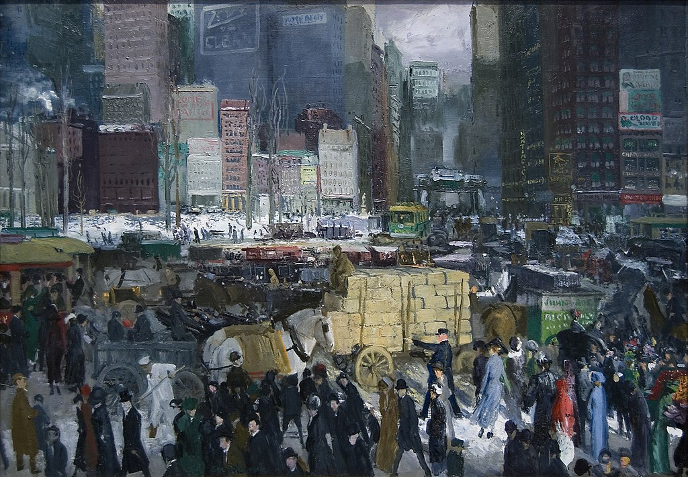

<head>
<meta charset="UTF-8" />
<meta name="keywords" content="drawing, painting" />
<meta name="description" content="drawings by Sunjy" />
<title>Sunjy</title>
<link rel="shortcut icon" type="image/x-icon" href="../../mImages/mCommon/favicon.ico" media="screen" />
<link rel="stylesheet" type="text/css" href="../../mCsses/mCommon/mCssA.css" />
<link rel="stylesheet" type="text/css" href="../../mCsses/mCommon/mCssB.css" />
<link rel="stylesheet" type="text/css" href="../../mCsses/mCommon/mCssC.css" />
<link rel="stylesheet" type="text/css" href="../../mCsses/mCommon/mCssD.css" />
<link rel="stylesheet" type="text/css" href="../../mCsses/mContent/mCssA.css" />
<link rel="stylesheet" type="text/css" href="../../mCsses/mContent/mCssB.css" />
<link rel="stylesheet" type="text/css" href="../../mCsses/mContent/mCssC.css" />
<link rel="stylesheet" type="text/css" href="../../mCsses/mContent/mCssD.css" />
</head>
<script type="text/javascript" src="../../mScripts/mContent/mContentAA.js" /></script>
<script type="text/javascript" src="../../mScripts/mContent/mContentAB.js" /></script>
<script type="text/javascript" src="../../mScripts/mContent/mContentAC.js" /></script>
<script type="text/javascript" src="../../mScripts/mContent/mContentAD.js" /></script>
<script type="text/javascript"></script> 
<script type="text/javascript">
document.write('<div class="mImgAbsolute"></div>');
/*
document.write('<p class="mFontSizeBColor" />From a white paper...</p>');
document.write('<table class="center"><tr><td>');
document.write('');
document.write('</td></tr></table>');
*/
</script>


<script type="text/javascript">
document.write('<p class="mFontSizeBColor" />New York</p>');
document.write('<p class="mFontSizeSColor" />New York by George Bellows is a large painting that captures the essence of modern life in New York City in 1911.<br><br>The view looks uptown toward Madison Square from the intersection of Broadway and 23rd Street, but Bellows drew on several commercial districts to create an imaginary composite.<br><br>His focus was to show the crowds and traffic to convey a sense of the city’s hectic pace. <br><br>Bellows assembled all of these diverse elements of New York into one scene. As one critic commented:<br><br>“Trucks are darting through the crowd.<br>Men and women are hurrying across the streets,<br>trolleys are clanging their way in and out,<br>a policeman is keeping people from being run over,<br>you feel the rush; you hear the noise,<br>and you wish you were safely home.”<br></p>');
document.write('<table class="center" /><tr><td>');
document.write('<br>The view looks uptown toward Madison Square from the intersection of Broadway and 23rd Street, but Bellows drew on several commercial districts to create an imaginary composite.<br><br>His focus was to show the crowds and traffic to convey a sense of the city’s hectic pace. <br><br>Bellows assembled all of these diverse elements of New York into one scene. As one critic commented:<br><br>“Trucks are darting through the crowd.<br>Men and women are hurrying across the streets,<br>trolleys are clanging their way in and out,<br>a policeman is keeping people from being run over,<br>you feel the rush; you hear the noise,<br>and you wish you were safely home.”<br>" />');
document.write('</td></tr></table>');
</script>


